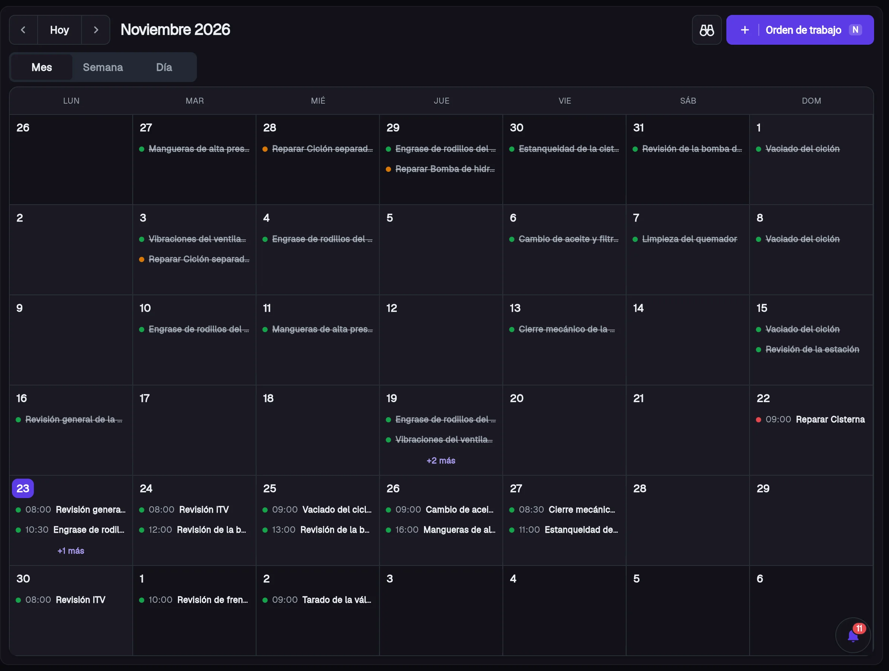
Planificación en mes, semana o día
Mira lo que viene y salta de un mantenimiento al siguiente con una tecla.
Configuras tus máquinas una vez y Pultec se encarga de que nada se pase de fecha.
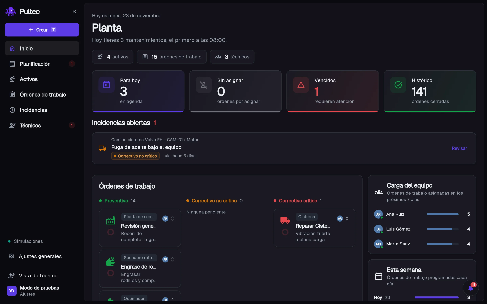
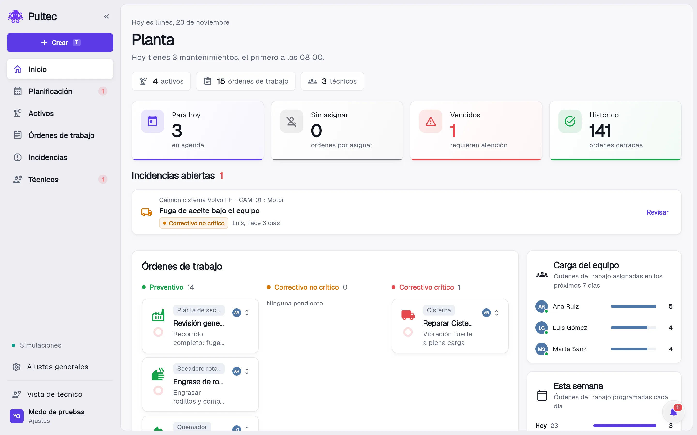
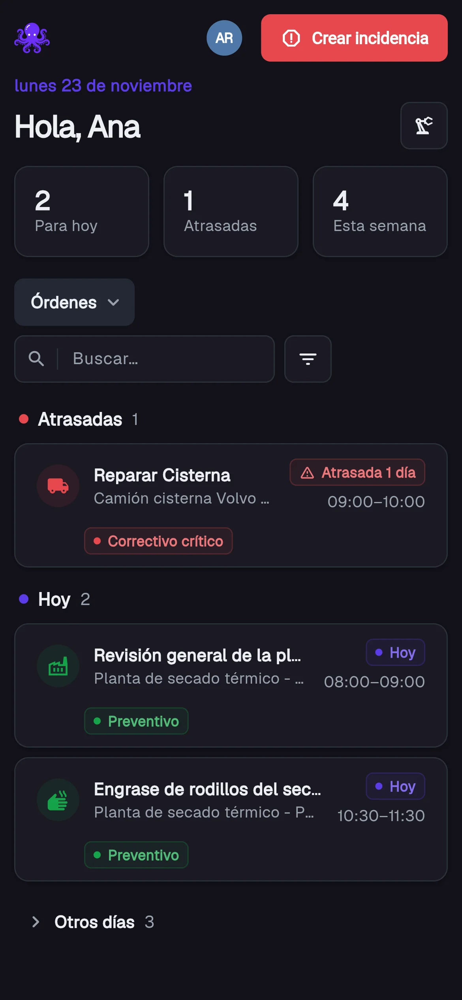
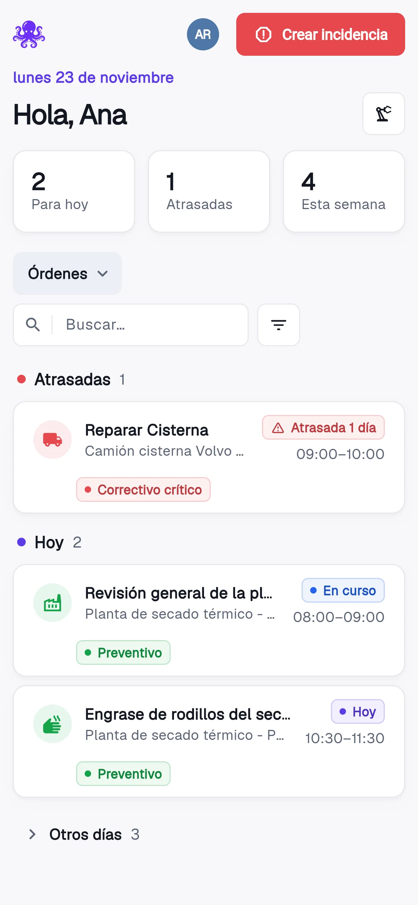
Falla porque depende de acordarse.
Así trabaja Pultec.
Da de alta tus máquinas en un momento: plantas, camiones, bombas, compresores… cada una con su icono, su tag y su contador de horas.
Entra en un activo y di cada cuánto toca cada mantenimiento: por días, meses o por horas de uso. Con un interruptor, sus órdenes se crearán solas.
El anillo de cada mantenimiento se va vaciando. Cuando llega el momento, Pultec crea la orden de trabajo con su descripción y su criticidad.
Cada activo tiene sus mantenimientos, cada mantenimiento genera sus órdenes y cada orden llega al técnico que la hace. Todo conectado.
Le llega el aviso, pulsa «Empezar OT» y el tiempo se mide solo. Checklist, contador y firma en la misma pantalla.
El técnico escribe qué pasa, hace una foto y elige la gravedad. En la oficina suena la campana y, con un clic, se crea la orden correctiva.
Cada intervención deja su parte en PDF con el historial y la firma del técnico. El histórico de cada máquina, siempre a mano.
un equipo de mantenimiento de verdad.

Mira lo que viene y salta de un mantenimiento al siguiente con una tecla.
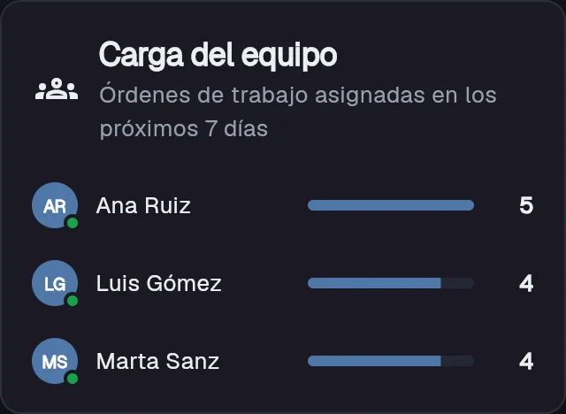
Reparte sin sobrecargar a nadie.
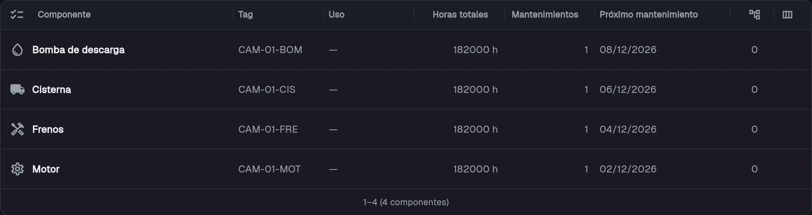
Organiza cada máquina pieza a pieza.
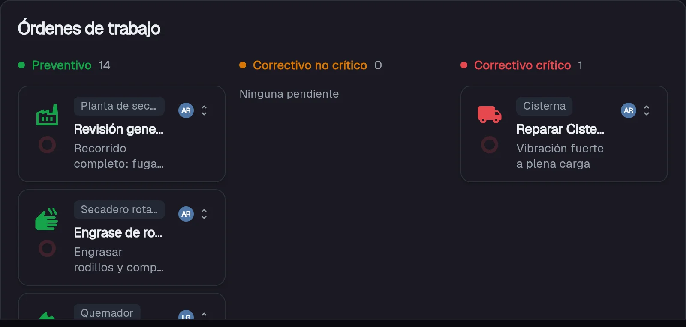
Verde, ámbar o rojo: sabes qué atender primero sin leer nada.
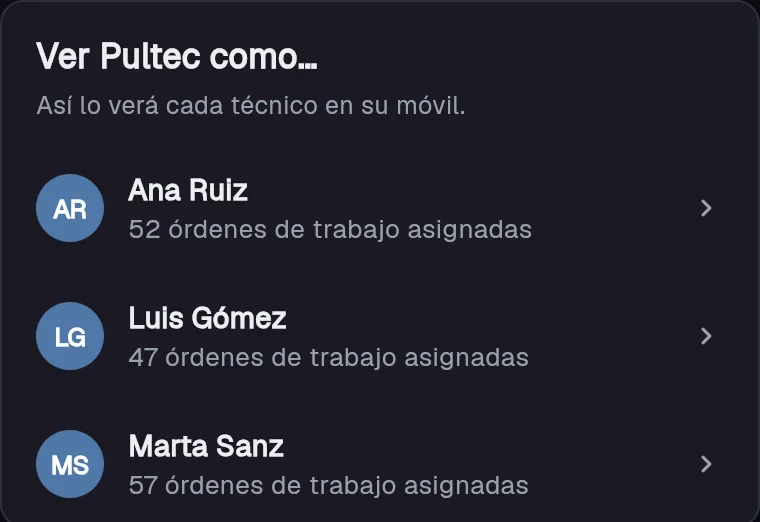
Invita a tu equipo y cada persona ve justo lo que necesita.
Sin formación, sin instalar nada y sin pantallas que no le sirven.
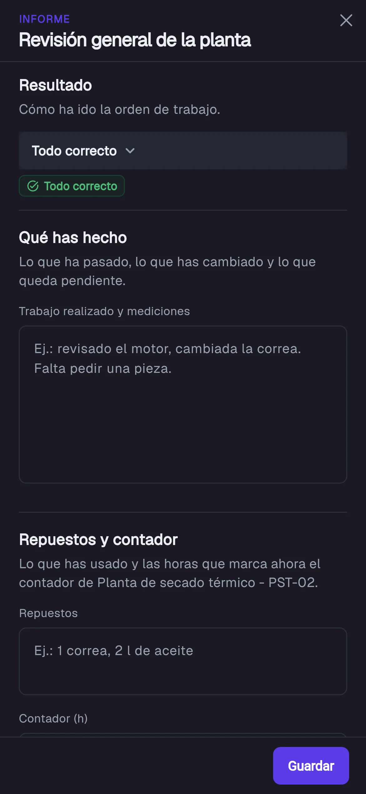
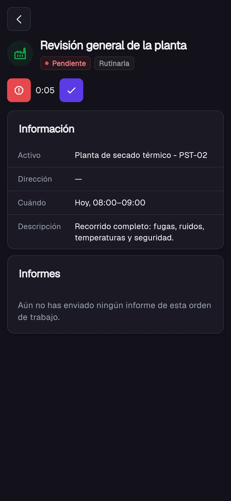
Lo preventivo llega antes que la avería.
Sin tarjeta. Después eliges plan.
Para quien lleva solo el mantenimiento de una planta pequeña.
39 €al mes
Sin operarios incluidos. Operarios extra a 12 € al mes cada uno.
Para empezar:
Para equipos pequeños con operarios en la calle.
79 €al mes
Operarios extra a 9 € al mes cada uno.
Todo lo del Básico, más:
Para equipos de mantenimiento que quieren tenerlo todo medido.
179 €al mes
Operarios extra a 7 € al mes cada uno.
Todo lo del Estándar, más:
Para varias plantas o delegaciones desde una misma cuenta.
399 €al mes
Incluye 1 planta. Plantas extra desde 99 € al mes.
Todo lo del Premium, más:
Precios sin IVA. Todos los planes empiezan con 14 días gratis, sin tarjeta.
Sí. Un mantenimiento pausado deja de crear órdenes hasta que lo reanudes, sin perder su historial. Puedes pausar uno o todos a la vez.
Se cancela y queda en el histórico. Nada se borra, así siempre sabes qué pasó.
Se guardan en la nube y cada empresa solo puede ver los suyos.
Cuando quieras, sin permanencia.
Da de alta tu primera máquina en dos minutos.
Probar Pultec gratis